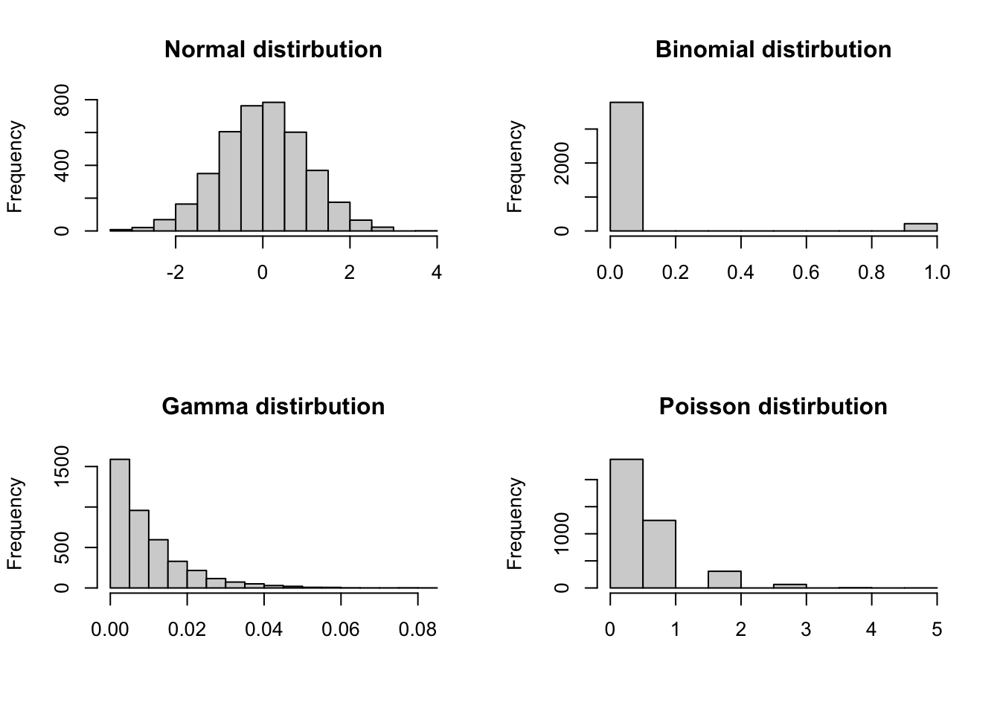
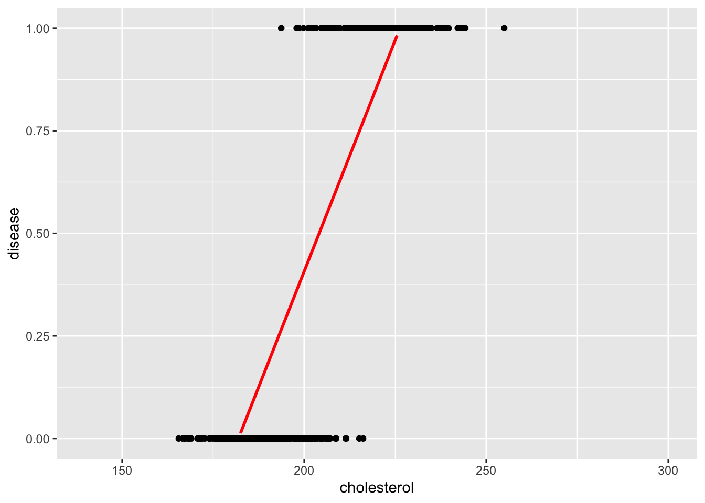

4 Lecture 4
Required packages
4.1 Non-Linear Regression
Linear regression does not work for:
binary outcomes: For example, predicting a disease (yes/no) based on the age, sex, smoking and blood pressure. Alternative: logistic regression
discrete outcomes: For example, classify severity as low, medium or high. Alternative: ordinal logistic regression.
count outcomes: For example, number of hospital visits, number of cigarettes smoked per day. Alternative: poisson regression or negative binomial regression
Generalized linear models, which extend the linear regression model to work with binary, discrete and count outcomes and other data that cannot be fit well with normally distributed errors.
par(mfrow = c(2, 2))
hist1 <- hist(rnorm(4000, 0, 1), main = "Normal distirbution", xlab = NULL)
hist2 <- hist(rbinom(4000, 1, 0.05), main = "Binomial distirbution", xlab = NULL)
hist3 <- hist(rgamma(4000, 1, 100), main = "Gamma distirbution", xlab = NULL)
hist4 <- hist(rpois(4000, 0.5), main = "Poisson distirbution", xlab = NULL)
| Distribution | Description |
|---|---|
| Normal | Standard linear regression is useful when data follows a bell-shaped distribution. |
| Binomial | Binary logisitic regression.Useful when the response is binary (e.g., yes/no). |
| Gamma | Gamma regression is useful when data is highly positively skewed. |
| Poisson | Poisson regression is useful for count data. |
4.1.1 Logistic regression
In linear regression, the outcome is a continuous variable, meaning that it can take on a range of numerical values. In contrast, logistic regression is used when the outcome is binary-that is, a categorical variable with exactly two possible values, such as “yes” or “nor”, “success” or “failure”, or “disease” or “no disease”. To model binary data, we need to add two features to the base model y = b0+ b1x1:
a nonlinear transformation that bounds the output between 0 and 1 (unlike
y=b0+b1x1, which is continuous), anda model that treats the resulting numbers as probabilities and maps them into random binary outcomes.
Logistic regression models the probability of one of these outcomes occurring as a function of one or more predictor variables. For example, logistic regression can be used to model the relationship between between heart coronary disease (yes or no) and predictors such as age and blood pressure. Similarly, it can be used to model the probability of a student dropping out of school (yes or no) based socioeconomic factors.
The model of a logistic regression
In logistic regression, the model estimates the log-odds of the binary outcome y as a linear function of predictors:
\[ log(\frac{P(Y = 1)}{P(Y = 0)}) = b_0 + b_{1}x_{1} + b_{2}x_{2} + ... + b_{p}x_{p} \]
b0: the intercept is log-odds of the outcome when all predictors are equal to zero. Exponentiatingb0gives the odds of the outcome when all predictors are equal to 0.If
xis a continuous predictor the regression coefficientbrepresents the change in the log-odds of the outcome per one-unit increase inx, holding all other predictors constant. Equivalently,exp(b)is the odds ratio (OR) for a one-unit increase inx.If
xis a categorical predictor (with k levels) is represented using dummy variables, comparing each level to a reference category. The coefficientbfor a given level represents the difference in log-odds of the outcome between that category and the reference category, again holding other variables constant. Equivalently,exp(b)is the odds ratio comparing that level to the reference level.
4.1.1.1 Why not to use a linear regression when outcome is binary
First let’s simulate data where disease is a binary outcome and cholesterol is a continuous predictor.
# for reproducibility
set.seed(050990)
# create a binomial variable
disease <- rbinom(500, 1, 0.5)
# create a continuous predictor
cholesterol <- ifelse(disease == 1, rnorm(500, 220, 10), rnorm(500, 190, 10))
# create a data set
disease_df <- data.frame(disease = disease, cholesterol = cholesterol)
head(disease_df, 5) disease cholesterol
1 1 207.6714
2 1 254.9519
3 1 235.0051
4 1 193.6956
5 0 193.1898Now let’s illustrate the relationship between disease and cholesterol.
ggplot(disease_df, aes(y = disease, x = cholesterol)) +
geom_point() +
ylim(c(0, 1)) +
xlim(c(140, 300)) +
geom_smooth(method = lm, se = FALSE, colour = "red")`geom_smooth()` using formula = 'y ~ x'
The straight line fitted using a linear model poorly fits the data. However, the red S-shaped curve better reflects the probability structure of binary data.
ggplot(disease_df, aes(y = disease, x = cholesterol)) +
geom_point() +
ylim(c(0, 1)) +
xlim(c(140, 300)) +
geom_smooth(method = glm, method.args= list(family = "binomial"), se = FALSE)`geom_smooth()` using formula = 'y ~ x'
Another key problem when using a linear regression model for binary outcomes is that the estimated values (interpreted as probabilities) can fall outside the range 0-1.
# A tibble: 2 × 5
term estimate std.error statistic p.value
<chr> <dbl> <dbl> <dbl> <dbl>
1 (Intercept) -4.10 0.136 -30.0 6.28e-114
2 cholesterol 0.0225 0.000667 33.8 4.79e-131For example, when cholesterol is 0, the linear model estimates that the probability of disease is -4.1 - which is not a valid probability. In contrast, logistic regression constrains the estimated values within the range [0, 1] making it appropriate for classification tasks. In R we can fit a logistic linear regression using glm(family = binomial).
Note
Contrast with Linear Regression:
Linear regression minimizes the vertical distance (squared errors) between observed data points and the fitted line.
Logistic regression maximizes the likelihood - the joint probability of the observed outcome given the model’s predicted probabilities (i.e., the parameter estimates are those values which maximize the likelihood of the data which have been observed).
4.1.1.2 Interpreting logistic regression coefficients
To interpret the logistic regression output, we need to transform the coefficients from the log-odds scale to OR and probabilities.
1- Fit a logistic simple model:
# fit a logistic simple model
logistic_model1 <- glm(disease ~ cholesterol, family = binomial, data = disease_df)
logistic_model1$coefficients(Intercept) cholesterol
-60.2681245 0.2956278 As it appears now, (Intercept) and cholesterol represent the log-odds of disease.
2- Convert coefficients to Odds Ratios using exp():
Each 1-unit increase in cholesterol is associated with 1.34x higher odds of having the disease.
3- Estimate the probability of disease for a given cholesterol level
intercept <- coef(logistic_model1)[[1]]
slope <- coef(logistic_model1)[[2]]
# Cholesterol value
cholesterol <- 200
# Compute log-odds
log_odds <- intercept + slope*cholesterol
#Convert to probability of disease
prob <- 1 / (1 + exp(-log_odds))
prob[1] 0.2418507Alternatively, we can use predict(type = response) to calculate the probability of disease`
# Create a data frame with new values
new_data <- data.frame(cholesterol = c(200, 250))
# Use predict(type = "response") to estimate probabilities for any given value
predict(logistic_model1, new_data, type = "response") 1 2
0.2418507 0.9999988 4.1.1.3 About odds and odds ratios
4.1.1.3.1 Odds
The odds of an event are the ratio of how likely the event is to occur and how likely it is to not occur. Odds express likelihood relative to non-occurrence. Odds are calculated as:
\[ \frac {p}{(1-p)} \]where p is the probability of an event happening, and 1-p is the probability that the event does not happen. For example, if an event has a probability of 0.8, then the odds are:
\[ \frac {0.8}{(1-0.8)} = \frac {0.8}{0.2} = 4 \]
which is read as “4 to 1”.
When the probability is greater than 50% (0.5), the odds are always greater than 1. When the probability of an event are is smaller than 50%, the odds are smaller than 1. When the probability is 50%, the odds equal 1.
4.1.1.3.2 Odds ratios
An odds ratio (OR) compares the odds of an event occurring in one group to the odds of the same event occuring in another group. It quantifies how much more (or less) likely the event is in one group compared to the other. For example, suppose the probability of disease is 0.25 for patients with high cholesterol and 0.15 for patients with adequate levels. The OR is, therefore, calculated as:
or <- (0.25 / (1-0.25)) / (0.15 / (1-0.15))
or[1] 1.888889An OR of 1.89 implies that the first group has 89% greater odds of developing the disease than the second group.
4.1.1.3.3 An example using a frequency table
| Exposure Status | Disease = Yes | Disease = No | Total |
|---|---|---|---|
| Smoker | 30 | 70 | 100 |
| Non-smoker | 10 | 90 | 100 |
-
Odds of disease among exposed:
\[ \frac {30}{70} = 0.43 \]
-
Odds of disease among unexposed:
\[ \frac {10}{90} = 0.11 \]
-
Odds Ratio:
\[ \frac {0.43} {0.11} = 3.86 \]
Interpretation:
The odds of disease in the exposed group are 0.43
The odds of disease in the unexposed group are 0.11
The odd ratio is 3.86, meaning the exposed group has 3.86 times higher odds of developing the disease compared to the unexposed group.
4.1.1.4 Multiple logistic regression
Just like in the linear regression, we can fit more than one predictor.
4.1.1.4.1 Model with one continuous predictor and one categorical predictor
Let’s create a second predictor of disease (i.e., smoking):
# for reproducibility
set.seed(050990)
# create a binary predictor (smoking)
smoking <- ifelse(disease == 1, rbinom(500, 1, 0.7), rbinom(500, 1, 0.10))
# add the new variable to the disease_df data set
disease_df$smoking <- as.factor(smoking)
head(disease_df, 5) disease cholesterol smoking
1 1 207.6714 0
2 1 254.9519 0
3 1 235.0051 1
4 1 193.6956 0
5 0 193.1898 1Let’s fit model with both cholesterol and smoking as predictors of disease.
logistic_model2 <- glm(disease ~ cholesterol + smoking, family = binomial, disease_df)
tidy(logistic_model2)# A tibble: 3 × 5
term estimate std.error statistic p.value
<chr> <dbl> <dbl> <dbl> <dbl>
1 (Intercept) -59.9 6.44 -9.30 1.44e-20
2 cholesterol 0.292 0.0315 9.27 1.87e-20
3 smoking1 1.86 0.551 3.37 7.55e- 4Rather than using the exp() function to convert log-odds coefficient of each single predictor to an OR like this:
We can use tidy() in the broom package with the argument exponentitate = TRUE to obtain the ORs for all predictors at once
res <- tidy(logistic_model2, exponentiate = TRUE)
res# A tibble: 3 × 5
term estimate std.error statistic p.value
<chr> <dbl> <dbl> <dbl> <dbl>
1 (Intercept) 9.93e-27 6.44 -9.30 1.44e-20
2 cholesterol 1.34e+ 0 0.0315 9.27 1.87e-20
3 smoking1 6.41e+ 0 0.551 3.37 7.55e- 4We can interpret these coefficients as follows:
cholesterol: For each 1-unit increase, the odds of disease increase by 34%. This increase is statistically significant.smoking1: being a smoker (smoking1 = 1) increases the odds of disease by 541 % compared to a non-smoker. This increase is statistically significant.
We can also obtain the confidence intervals (CIs) for the odds ratios by exponentiating the confidence intervals of the model coefficients:
Waiting for profiling to be done... 2.5 % 97.5 %
cholesterol 1.266617 1.434272
smoking1 2.274929 20.022067Alternatively, we can use tidy() in the broom package with the argument conf.int = TRUE (along with exponentiate = TRUE) to get the odds ratios and their confidence intervals all at once:
tidy(logistic_model2,
exponentiate = TRUE,
conf.int = TRUE)# A tibble: 3 × 7
term estimate std.error statistic p.value conf.low conf.high
<chr> <dbl> <dbl> <dbl> <dbl> <dbl> <dbl>
1 (Intercept) 9.93e-27 6.44 -9.30 1.44e-20 7.43e-33 8.29e-22
2 cholesterol 1.34e+ 0 0.0315 9.27 1.87e-20 1.27e+ 0 1.43e+ 0
3 smoking1 6.41e+ 0 0.551 3.37 7.55e- 4 2.27e+ 0 2.00e+ 1Now let’s simulate the probability of disease:
# Get the levels from the original data
levels(disease_df$smoking)[1] "0" "1"# Create new values
new_data <- data.frame(
cholesterol = c(50, 50, 200, 200),
smoking = factor(rep(c(0,1), 2), levels = levels(disease_df$smoking))
)
# Add predictions
predicted_prob <- predict(logistic_model2, new_data, type = "response")
# Store both numeric and pretty-formatted percentages
new_data$probability <- round(predicted_prob * 100, 2)
new_data cholesterol smoking probability
1 50 0 0.00
2 50 1 0.00
3 200 0 17.84
4 200 1 58.194.1.1.4.2 Model with an interaction between two predictors
In this section, we analyze a dataset containing health records of patients to predict a binary outcome: whether a patient suffers from diabetes (diabetes: yes = 1 / no = 0).
The goal is to explore how various physiological indicators—such as body mass index, blood pressure, and glucose levels—are associated with the likelihood of diabetes.
Load and clean the data:
data <- read.csv("https://raw.githubusercontent.com/plotly/datasets/master/diabetes.csv")
colnames(data)<-tolower(colnames(data))
data$outcome<-as.factor(data$outcome)
head(data, 5) pregnancies glucose bloodpressure skinthickness insulin bmi
1 6 148 72 35 0 33.6
2 1 85 66 29 0 26.6
3 8 183 64 0 0 23.3
4 1 89 66 23 94 28.1
5 0 137 40 35 168 43.1
diabetespedigreefunction age outcome
1 0.627 50 1
2 0.351 31 0
3 0.672 32 1
4 0.167 21 0
5 2.288 33 1Fit a regression model with an interaction term between
# Fit a multiple regression logistic model
logistic_model3 <- glm(outcome ~ age + glucose*bmi, data = data, family="binomial")
# Use tidy() to make it more readable
res <- tidy(logistic_model3, exponentiate = TRUE)
# Make estimates and p-values more interpretable
res <- res |>
mutate(estimate_round = round(estimate, 2),
p_value = round(p.value, 2)) |>
select(term, estimate_round, std.error, statistic, p_value)
res# A tibble: 5 × 5
term estimate_round std.error statistic p_value
<chr> <dbl> <dbl> <dbl> <dbl>
1 (Intercept) 0 2.25 -4.50 0
2 age 1.03 0.00770 3.81 0
3 glucose 1.05 0.0177 2.64 0.01
4 bmi 1.14 0.0653 2.04 0.04
5 glucose:bmi 1 0.000508 -0.815 0.42Interpretation:
age: Every 1-year increase in age increases the odds ofdiabetesby 3%. This increase is statistically significant.glucose: Every 1-unit increase in glucose increases the odds ofdiabetesby 5%. This increase is statistically significant.bmi: Every 1-unit increase in body mass index increases the odds ofdiabetesby 14%. This increase is statistically significant.glucos:bmi: The effect ofglucoseon the odds ofdiabetesdoes not increase asbmiincreases. The interaction effect is not statistically significant.
4.1.1.5 Centering
# A tibble: 3 × 5
term estimate std.error statistic p.value
<chr> <dbl> <dbl> <dbl> <dbl>
1 (Intercept) 0.00518 0.486 -10.8 2.57e-27
2 glucose 1.04 0.00329 11.6 7.22e-31
3 bloodpressure 0.998 0.00443 -0.354 7.23e- 1(intercept) represents the odds of diabetes when all other variables are 0. However, interpreting (intercept) when glucose = 0 and bloodpressure = 0 is not meaningful as it is physiologically impossible. We can make (intercept) more interpretable by centering the predictors.
# Center the predictors
data$glucose_centered <- data$glucose - mean(data$glucose)
data$bloodpressure_centered <- data$bloodpressure - mean(data$bloodpressure)
# Refit the logistic regression model with the centered predictors
res <- glm(outcome ~ glucose_centered + bloodpressure_centered,
data = data, family="binomial") |>
tidy(exponentiate = TRUE)
res# A tibble: 3 × 5
term estimate std.error statistic p.value
<chr> <dbl> <dbl> <dbl> <dbl>
1 (Intercept) 0.462 0.0883 -8.74 2.40e-18
2 glucose_centered 1.04 0.00329 11.6 7.22e-31
3 bloodpressure_centered 0.998 0.00443 -0.354 7.23e- 1Interpretation:
(intercept): Whenglucoseandbloodpressureare at their average levels, the odds ofdiabtesare 0.46.glucose_centered: Every 1-unit increase in glucose significantly increases the odds ofdiabetesby 4%.bloodpressure: Every 1-unit increase in blood pressure decreases the odds ofdiabetesby -0.16%. However, this is not statistically significant.
4.1.1.6 Model fit
Suppose we want to compare whether adding bmi to a simpler model increases the fit of the model:
Simpler model
model1 <- glm(outcome ~ glucose + bloodpressure + insulin,
data = data, family="binomial")
summary(model1)
Call:
glm(formula = outcome ~ glucose + bloodpressure + insulin, family = "binomial",
data = data)
Coefficients:
Estimate Std. Error z value Pr(>|z|)
(Intercept) -5.3381664 0.4943004 -10.799 <2e-16 ***
glucose 0.0390197 0.0034669 11.255 <2e-16 ***
bloodpressure -0.0013534 0.0044319 -0.305 0.760
insulin -0.0007271 0.0007565 -0.961 0.336
---
Signif. codes: 0 '***' 0.001 '**' 0.01 '*' 0.05 '.' 0.1 ' ' 1
(Dispersion parameter for binomial family taken to be 1)
Null deviance: 993.48 on 767 degrees of freedom
Residual deviance: 807.68 on 764 degrees of freedom
AIC: 815.68
Number of Fisher Scoring iterations: 4Model with bmi
model2 <- glm(outcome ~ glucose + bloodpressure + insulin + bmi,
data = data, family="binomial")
summary(model2)
Call:
glm(formula = outcome ~ glucose + bloodpressure + insulin + bmi,
family = "binomial", data = data)
Coefficients:
Estimate Std. Error z value Pr(>|z|)
(Intercept) -7.433886 0.657526 -11.306 < 2e-16 ***
glucose 0.037708 0.003531 10.679 < 2e-16 ***
bloodpressure -0.007430 0.004907 -1.514 0.1300
insulin -0.001493 0.000785 -1.902 0.0572 .
bmi 0.083887 0.013880 6.044 1.5e-09 ***
---
Signif. codes: 0 '***' 0.001 '**' 0.01 '*' 0.05 '.' 0.1 ' ' 1
(Dispersion parameter for binomial family taken to be 1)
Null deviance: 993.48 on 767 degrees of freedom
Residual deviance: 765.48 on 763 degrees of freedom
AIC: 775.48
Number of Fisher Scoring iterations: 4How do we choose the best model?
4.1.1.6.1 AIC
AIC (Akaike Information Criterion) is a metric used to compare and select the best model from a set of candidate models by balancing goodness-of-fit and complexity. It is calculated as follows:
\[ AIC = -2 * log(likelihood) + 2k \]
In the AIC formula, k represents the number of parameters included in the model-including the intercept and all independent variables. The term 2k serves as a penalty for model complexity. A lower AIC value indicates a model that achieves a better balance between fit and simplicity (parsimony). Therefore, among competing models, the one with the lowest AIC is generally preferred.
model1 had an AIC of 815.6764735 whereas model2` had an AIC of 775.4809783. Since model2 has the lower AIC, it is the preferred model, as it achieves a better trade-off between model fit and complexity.
4.1.1.6.2 Pseudo R2
Note that now glm() does not provide R2 compared with lm(). This is because we need to use another fit estimate when using glm(). Even though everyone agrees on how to calculate R2 and associated p-value for linear Models, there is no consensus on how to calculate R2 for logistic regression. There are more than 10 different ways to do it!
One of the most common method is McFadden’s Pseudo R2. This method is very similar to the method in Linear Model. McFadden’s R squared measure is defined as:
\[ R^2_{McFadden} = \frac {1−log(Lc)} {log(Lnull)} \]
where Lc denotes the (maximized) likelihood value from the current fitted model, and Lnull denotes the corresponding value but for the null model - the model with only an intercept and no covariates.
The log-likelihood R2 values go from 0, for poor models, to 1, for good models and it can be calculated with the function pscl::pR2()
The log-likelihood R2 for model would be:
pR2(model1)fitting null model for pseudo-r2 llh llhNull G2 McFadden r2ML r2CU
-403.8382368 -496.7419551 185.8074366 0.1870261 0.2148942 0.2961125 The log-likelihood R2 for model2 would be:
pR2(model2)fitting null model for pseudo-r2 llh llhNull G2 McFadden r2ML r2CU
-382.7404891 -496.7419551 228.0029319 0.2294984 0.2568659 0.3539473 Because model2 has a higher McFadden’s R2 value, we conclude that model2 fits the data better than model1.
4.1.1.6.3 Summary
Key insights:
AIC looks for the best trade-off between fit and complexity.
Pseudo-R² only looks at improvement in fit (ignoring complexity)
So, a model might:
Have a higher pseudo-R²
But a higher (worse) AIC if it’s too complex
For example:
| Model | Log-Likelihood | Parameters | AIC | McFadden’s pseudo R² |
|---|---|---|---|---|
| Null Model | -150 | 1 | 302 | 0.00 |
| Model A | -100 | 3 | 206 | 0.33 |
| Model B | -98 | 6 | 208 | 0.35 |
Despite Model B having a slightly higher McFadden’s pseudo R2 compared to model A, its AIC value is higher. Since AIC penalizes complexity and is more robust criterion for model selection, we prefer Model A over Model B due to its lower AIC.
4.1.1.7 Model comparison
To statistically compare models, we can use anova(test = "Chisq").
# A tibble: 2 × 6
term df.residual residual.deviance df deviance p.value
<chr> <dbl> <dbl> <dbl> <dbl> <dbl>
1 outcome ~ glucose + bl… 764 808. NA NA NA
2 outcome ~ glucose + bl… 763 765. 1 42.2 8.26e-11Based on the Chi-square test from the likelihood ratio test, we conclude that model2 fits the data significantly better than model1 as the p-value is below 0.05.
4.1.1.8 Differences between AIC and anova(test = “Chisq”)
| Feature | AIC | ANOVA (test = "Chisq") |
|---|---|---|
| Purpose | Model selection (fit vs. complexity) | Hypothesis testing (is extra predictor significant?) |
| Compares | Any models (nested or not) | Only nested models (i.e., one is a subset of the other) |
| Penalty for complexity | Yes (via AIC formula) | No — tests if added complexity improves fit significantly |
| Based on | Log-likelihood | Likelihood ratio test (LRT) |
| Output | AIC values | p-values |
4.1.2 Poisson regression
In this section, we will briefly cover Poisson regression, a modelling technique used to analyze count data. To illustrate this, we will simulate a dataset where the outcome is the number of calls made by customers. We aim to predict calls using two predictors: age (age of customers) and is_premium (type of subscription: 1 = premium; 0 = regular customer).
Let’s simulate the dataset.
# Simulate a simple dataset
set.seed(123)
n <- 100 # number of observations
data <- data.frame(
age = sample(20:70, n, replace = TRUE),
is_premium = sample(0:1, n, replace = TRUE)
)
# Simulate expected call rate (log link)
data$lambda <- exp(0.5 + 0.03 * data$age - 0.6 * data$is_premium)
# Simulate call counts using Poisson distribution
data$calls <- rpois(n, lambda = data$lambda)
# View the first few rows
head(data) age is_premium lambda calls
1 50 1 4.055200 8
2 34 0 4.572225 6
3 70 0 13.463738 15
4 33 0 4.437096 4
5 22 1 1.750673 2
6 61 1 5.640654 6Now let’s fit the poisson regression model using glm(family = poisson()).
Call:
glm(formula = calls ~ age + is_premium, family = poisson(), data = data)
Coefficients:
Estimate Std. Error z value Pr(>|z|)
(Intercept) 0.43520 0.19898 2.187 0.0287 *
age 0.02984 0.00352 8.476 < 2e-16 ***
is_premium -0.53497 0.09289 -5.759 8.44e-09 ***
---
Signif. codes: 0 '***' 0.001 '**' 0.01 '*' 0.05 '.' 0.1 ' ' 1
(Dispersion parameter for poisson family taken to be 1)
Null deviance: 248.63 on 99 degrees of freedom
Residual deviance: 107.94 on 97 degrees of freedom
AIC: 434.62
Number of Fisher Scoring iterations: 4The coefficients are on the log scale of the rate and we use exp() to exponentiate coefficients to get Incidence Rate Ratios (IRRs):
Obtain 95% CI:
Waiting for profiling to be done... 2.5 % 97.5 %
(Intercept) 1.040433 2.2700495
age 1.023243 1.0374640
is_premium 0.487611 0.7019417Interpretation
age: For every additional year of age, the expected number of calls increases by about 3%, holding subscription type constant. It is statistically significant.is_premium: Premium customers have about 41% fewer calls than regular customers, holding age constant (since 0.59 < 1, it’s a decrease). It is statistically significant.